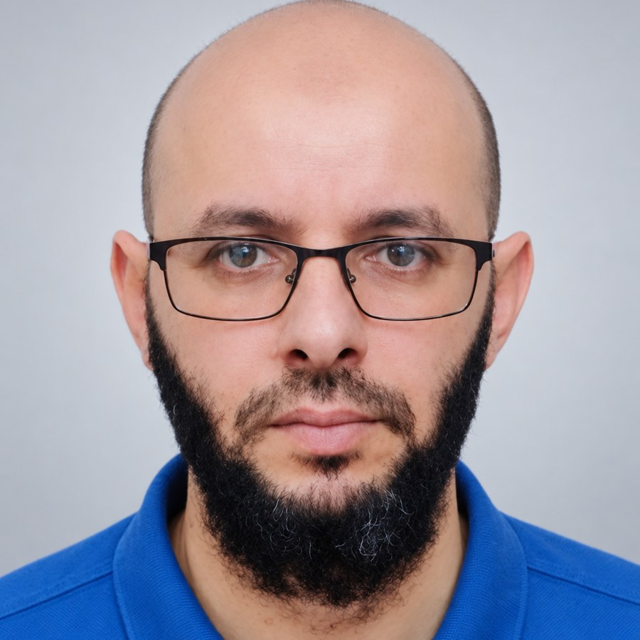
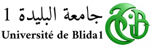

Merouane Dida successfully defended his Ph.D. thesis
Doctoral supervision milestone at Kasdi Merbah University of Ouargla.

Dr. Mourad Belhadj is a researcher and lecturer in Computer Science whose work bridges Artificial Intelligence and Machine Learning. His research focuses on developing hybrid deep learning models and datasets for Speech Emotion Recognition (SER), Ophthalmology (Diabetic Retinopathy & Glaucoma), and Smart Systems. Through interdisciplinary international collaborations, he advances AI solutions tailored to the Arabic language and regional health contexts.
Joint collaboration with LINATI Laboratory & Hospital of Ophthalmology, Ouargla. Developing deep learning architectures and microservice software for diabetic retinopathy and glaucoma detection in Algerian hospital networks.
Construction of the validated Kasdi-Merbah University Emotional Database in Arabic Speech (KEDAS, published by LDC/UPenn) and engineering novel hybrid EmotionNet models combining acoustic & spectrogram features.
Local Coordinator & Key Member (EU Grant No. 617768-EPP-1-2020-1-DZ-EPPKA2-CBHE-SP). Creation of digital capacities for Quality Assurance management across Algerian Higher Education institutions. (www.digitaq.eu)
Visiting researcher under Algeria’s National Exceptional Programme (PNE) at École de technologie supérieure (ÉTS), Montréal, Canada. Conducted research on bio-inspired artificial immune systems and Non-Negative Matrix Factorization (NMF-DCA).
Doctoral supervision milestone at Kasdi Merbah University of Ouargla.
New work on an efficient fuzzy neural network for Arabic speech emotion recognition.
Diabetic-retinopathy classification research presented through ICPR and RRPR in Lyon, France.
Research visit completed under Algeria’s National Exceptional Programme (PNE).
Collaborative research launched for diabetic-retinopathy and glaucoma detection in Algerian hospitals.
Joint doctoral supervision and research collaboration in software architecture, artificial intelligence, and medical imaging.
Visiting-research collaboration under Algeria’s National Exceptional Programme (PNE), focused on bio-inspired artificial immune systems and NMF-DCA.
International dissemination of the KEDAS Arabic speech-emotion dataset through the LDC catalogue.
Topic: A New Arabic Speech Emotion Recognition Framework.
 Institution: Kasdi Merbah University of Ouargla.
Institution: Kasdi Merbah University of Ouargla.
Topic: Data-Driven Diagnosis: A Machine Learning Methodology for Predictive Health Management.
 Institution: Kasdi Merbah University of Ouargla.
Institution: Kasdi Merbah University of Ouargla.
Topic: Parallelism Solutions for Accelerating Computation in Elliptic-Curve Cryptography.

Topic: Ophthalmological Dataset Engineering Enabled by a Microservices-Based Software Architecture for Diabetic Retinopathy Detection in Algerian Hospitals.
 Institution: Kasdi Merbah University of Ouargla.
Institution: Kasdi Merbah University of Ouargla.